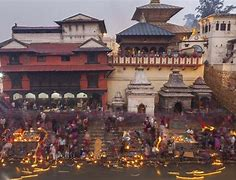

3 . pashupatinath
|  |
| district |
kathmandu |
| affiliation |
hinduism |
| location |
Gaushala, Kathmandu |
| type |
pagoda |
| date of established |
16th century |
The temples, monuments built in the Kathmandu valley shows the harmony existing in the place between the two different religions i.e. Hinduism and Buddhism. So in this Kathmandu valley, there are numerous culturally interesting places as well as the numerous beautiful temples to visit.
The most famous Hindu temple attached with the religious importance is situated within the valley at the bank of holy Bagmati River. This sacred Hindu pilgrimage is located at 5 km north east of the Kathmandu valley in the eastern part of the Kathmandu.
People who follow Hindu culture and tradition specially visit this temple from all across the world. Pashupatinath temple has its own importance regarding the Hindu culture. Since the temple and the monuments within the temple premise is built in unique structure and is the sacred pilgrimage for Hindu deities, the temple has been enlisted in the world heritage list of UNESCO since 1979.
Pashupatinath is the oldest Hindu temple in Kathmandu and there is no any certainty about the period when this famous temple was built. But as per some of the Hindu epic like Nepal Mahatmayapashupatinath temple existed about 400 B.C ago.
Besides this, as per the manuscript within the temple premises, the temple was built in the two- story form and during the period of Lichhavi king Supushpathe temple was renovated and several other temples and monuments were built within the temple premises.